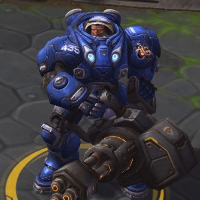
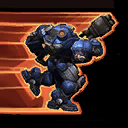
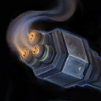
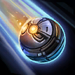
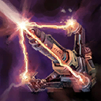
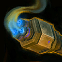
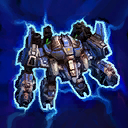
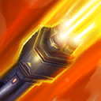
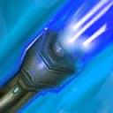

Tychus
Welcome to our Tychus guide for Heroes of the Storm. Here you will learn everything you need to know in order to play Tychus in a competitive environment, whether you play on your own or with a team.
Minigun Build
| Level 1 | Level 4 | Level 7 | Level 10 | Level 13 | Level 16 | Level 20 |
|---|---|---|---|---|---|---|
|  |  |  |  |
The Minigun Icon Minigun Build increases the utility of Minigun's active component, and benefits from complementary Talents at Levels that lack Minigun options. Use Frag Grenade to harass on cooldown, unless you need to hold it to interrupt a channeled Heroic. This build is very strong against Heroes who are easy to Basic Attack for extended durations, as this will allow you to farm In the Rhythm Icon In the Rhythm stacks from them.
Overkill Build
| Level 1 | Level 4 | Level 7 | Level 10 | Level 13 | Level 16 | Level 20 |
|---|---|---|---|---|---|---|
|  |  |  |  |
The Overkill Icon Overkill Build is designed around the finishing potential of Overkill. The general idea is that you use The Bigger They Are... Icon The Bigger They Are... to rip through an enemy's Health pool quickly, and then finish them off with Overkill and Frag Grenade. Quarterback Icon Quarterback and Spray 'n' Pray Icon Spray 'n' Pray will increase the range you have with these finishers, while Armor Piercing Rounds Icon Armor Piercing Rounds will greatly increase Overkill's damage. The main drawback of this build is that you cannot increase Overkill's damage until Level 16; you will harass with Overkill and Frag Grenade until then. Another weakness of this build is that the constant use of your Abilities can cause you to run out of Mana. Drakken Laser Drill Icon Drakken Laser Drill can work with this build in certain situations. However, Odin is great when you are low on Mana, because its Abilities cost none.
Go Back